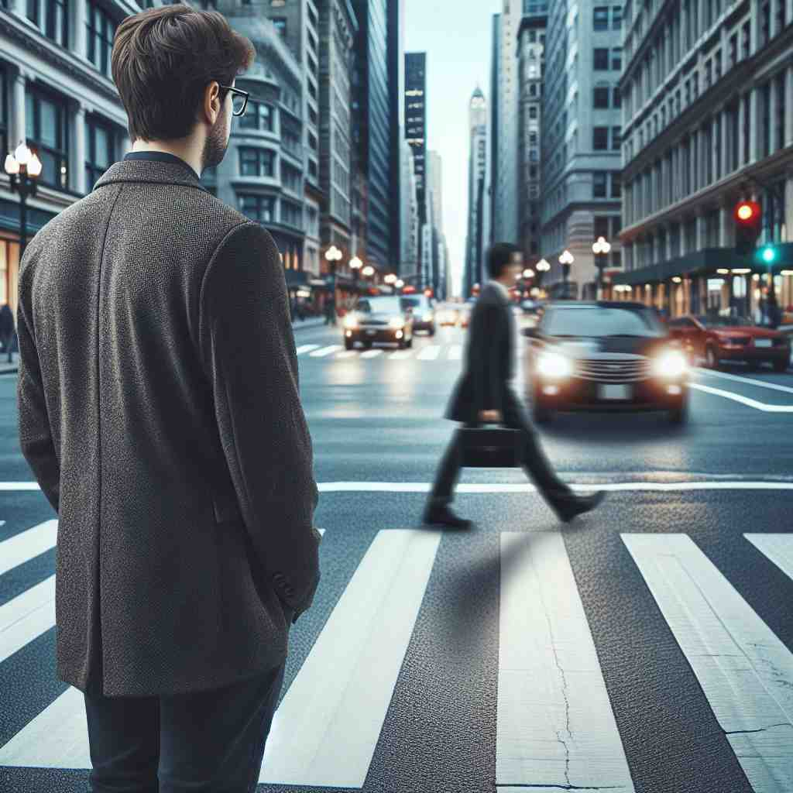

🗝️ n. a person walking in the street, not travelling in a vehicle
🖼️ 在一个炎热的夏日午后，城市街道上人来人往。一个行人背着背包，戴着帽子，慢慢穿过斑马线。他穿过车水马龙的街道，享受着步行的乐趣，周围是如织的行人，大家纷纷躲闪来往的车辆。
🔍 想象一个普通人在街上行走的场景。这个核心意象不仅代表了字面上的'行人'，还延伸到了'平凡'、'乏味'的含义。行走是一种常见、普通的行为，因此'pedestrian'也用来形容缺乏想象力或平淡无奇的事物。记住这个走路的人的形象，可以帮助你联想该词的各种含义。
💬 Many pedestrians on the street enjoy their shopping.
💬 The busy pedestrian area is full of people enjoying their day.

💬 The man is waiting at the pedestrian crossing while cars drive by.

💬 There is a group of pedestrians crossing the street safely.
🔗 1. pedal: 踏板 2. pedicure: 足部护理 3. biped: 两足动物